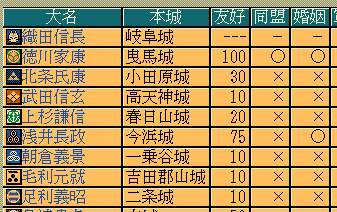
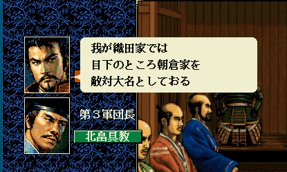
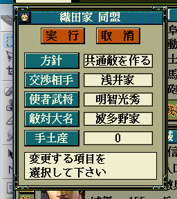
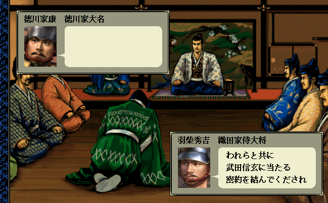
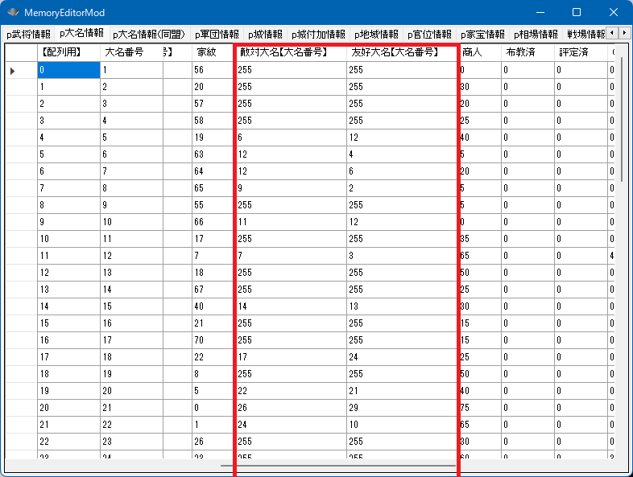
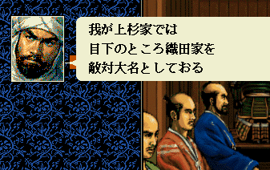

大名の関係には
大名Ａと大名Ｂ は「親密度」という意味での「友好値」




があります。
ScenarioModやメモリエディタでは歴史的な都合で「p大名情報[ix].友好大名【大名番号】」が「共闘関係の大名番号」に相当します

int Is_同盟関係(int 大名Ａ番号【配列用】, int 大名Ｂ番号【配列用】)
void Set_同盟関係(int 大名Ａ番号【配列用】, int 大名Ｂ番号【配列用】, BOOL 同盟化 = TRUE)
void カスタム::On_プレイヤ担当ターン《メイン画面》() {
int iBushouID_A = Get_武将番号【配列用】(顔番号::織田信長);
int iBushouID_B = Get_武将番号【配列用】(顔番号::武田晴信);
if (0 <= iBushouID_A && iBushouID_A < 最大数::武将情報::配列数 &&
0 <= iBushouID_B && iBushouID_B < 最大数::武将情報::配列数 ) {
// 両者とも大名である
if (p武将戸籍情報[iBushouID_A].身分 == 身分::大名 && p武将戸籍情報[iBushouID_B].身分 == 身分::大名) {
int iDaimyoID_A = p武将情報[iBushouID_A].所属大名【大名番号】 - 1;
int iDaimyoID_B = p武将情報[iBushouID_B].所属大名【大名番号】 - 1;
if (0 <= iDaimyoID_A && iDaimyoID_A < 最大数::大名情報::配列数 &&
0 <= iDaimyoID_B && iDaimyoID_B < 最大数::大名情報::配列数) {
// 同盟関係でなければ、同盟関係を結ぶ
if ( Is_同盟関係(iDaimyoID_A, iDaimyoID_B) == false) {
Set_同盟関係(iDaimyoID_A, iDaimyoID_B);
}
}
}
}
}
int Is_婚姻関係(int 大名Ａ番号【配列用】, int 大名Ｂ番号【配列用】)
void Set_婚姻関係(int 大名Ａ番号【配列用】, int 大名Ｂ番号【配列用】, BOOL 婚姻化 = TRUE)
void カスタム::On_プレイヤ担当ターン《メイン画面》() {
int iBushouID_A = Get_武将番号【配列用】(顔番号::織田信長);
int iBushouID_B = Get_武将番号【配列用】(顔番号::武田晴信);
if (0 <= iBushouID_A && iBushouID_A < 最大数::武将情報::配列数 &&
0 <= iBushouID_B && iBushouID_B < 最大数::武将情報::配列数 ) {
// 両者とも大名である
if (p武将戸籍情報[iBushouID_A].身分 == 身分::大名 && p武将戸籍情報[iBushouID_B].身分 == 身分::大名) {
int iDaimyoID_A = p武将情報[iBushouID_A].所属大名【大名番号】 - 1;
int iDaimyoID_B = p武将情報[iBushouID_B].所属大名【大名番号】 - 1;
if (0 <= iDaimyoID_A && iDaimyoID_A < 最大数::大名情報::配列数 &&
0 <= iDaimyoID_B && iDaimyoID_B < 最大数::大名情報::配列数) {
// 婚姻関係でなければ、婚姻関係を結ぶ
if ( Is_婚姻関係(iDaimyoID_A, iDaimyoID_B) == false) {
Set_婚姻関係(iDaimyoID_A, iDaimyoID_B);
}
}
}
}
}
int Get_友好関係(int 大名Ａ番号【配列用】, int 大名Ｂ番号【配列用】)
void Set_友好関係(int 大名Ａ番号【配列用】, int 大名Ｂ番号【配列用】, int 友好値)
void カスタム::On_プレイヤ担当ターン《メイン画面》() {
int iBushouID_A = Get_武将番号【配列用】(顔番号::織田信長);
int iBushouID_B = Get_武将番号【配列用】(顔番号::武田晴信);
if (0 <= iBushouID_A && iBushouID_A < 最大数::武将情報::配列数 &&
0 <= iBushouID_B && iBushouID_B < 最大数::武将情報::配列数 ) {
// 両者とも大名である
if (p武将戸籍情報[iBushouID_A].身分 == 身分::大名 && p武将戸籍情報[iBushouID_B].身分 == 身分::大名) {
int iDaimyoID_A = p武将情報[iBushouID_A].所属大名【大名番号】 - 1;
int iDaimyoID_B = p武将情報[iBushouID_B].所属大名【大名番号】 - 1;
if (0 <= iDaimyoID_A && iDaimyoID_A < 最大数::大名情報::配列数 &&
0 <= iDaimyoID_B && iDaimyoID_B < 最大数::大名情報::配列数) {
// 友好関係が60を超えていたら80に設定
if ( Get_友好関係(iDaimyoID_A, iDaimyoID_B) >= 60) {
Set_友好関係(iDaimyoID_A, iDaimyoID_B, 80);
}
}
}
}
}
p大名情報[ix].敵対大名【大名番号】
void カスタム::On_プレイヤ担当ターン《メイン画面》() {
// 織田信長が帰属する大名家の家紋を151番に変更する
int iBushouID = Get_武将番号【配列用】(顔番号::織田信長);
// 織田信長が大名の時、大名番号【配列用】を取得する
int i信長のDaimyoID = 0xFFFF;
if (0 <= iBushouID && iBushouID < 最大数::武将情報::配列数) {
if (p武将戸籍情報[iBushouID].身分 == 身分::大名) {
int iDaimyoID = p武将情報[iBushouID].所属大名【大名番号】 - 1;
if (0 <= iDaimyoID && iDaimyoID < 最大数::大名情報::配列数) {
i信長のDaimyoID = iDaimyoID;
}
}
}
// 全ての大名家が、織田信長を敵国設定する
if ( 0 <= i信長のDaimyoID && i信長のDaimyoID < 最大数::武将情報::配列数) {
for(int iDaimyoID = 0; iDaimyoID < 最大数::大名情報::配列数; iDaimyoID++) {
// 織田信長の織田家自身の情報については、敵対大名の変更をしない(織田家自身が織田家を敵対とか意味不明なため)
if (iDaimyoID == i信長のDaimyoID) { continue; }
// 有効な大名である。
if (p大名情報[iDaimyoID].大名【武将番号】 != 0xFFFF) {
p大名情報[iDaimyoID].敵対大名【大名番号】 = i信長のDaimyoID + 1; // 大名番号【配列用】→大名番号 に変更して代入
}
}
}
}

敵対大名を解除する時には「敵対大名【大名番号】」に「255(=0xFF)」を代入すればよい
p大名情報[ix].友好大名【大名番号】
void カスタム::On_プレイヤ担当ターン《メイン画面》() {
int 武田信玄のDaimyoID = -1;
int 上杉謙信のDaimyoID = -1;
int 織田信長のDaimyoID = -1;
for (int iDaimyoID = 0; iDaimyoID < 最大数::大名情報::配列数; iDaimyoID++) {
// 大名家の大名本人の武将番号【配列用】
int iBushouID = p大名情報[iDaimyoID].大名【武将番号】 - 1;
if (0 <= iBushouID && iBushouID < 最大数::武将情報::配列数) {
// それは
if (p武将戸籍情報[iBushouID].顔番号 == 顔番号::武田晴信) {
武田信玄のDaimyoID = iDaimyoID;
}
else if (p武将戸籍情報[iBushouID].顔番号 == 顔番号::長尾景虎) {
上杉謙信のDaimyoID = iDaimyoID;
}
else if (p武将戸籍情報[iBushouID].顔番号 == 顔番号::織田信長) {
織田信長のDaimyoID = iDaimyoID;
}
}
}
// ３者が全て居る。
if (0 <= 武田信玄のDaimyoID && 武田信玄のDaimyoID < 最大数::大名情報::配列数 &&
0 <= 上杉謙信のDaimyoID && 上杉謙信のDaimyoID < 最大数::大名情報::配列数 &&
0 <= 織田信長のDaimyoID && 織田信長のDaimyoID < 最大数::大名情報::配列数) {
// 武田信玄と上杉謙信が友好関係(共闘関係)となり、織田信長を敵対とする
p大名情報[武田信玄のDaimyoID].友好大名【大名番号】 = 上杉謙信のDaimyoID + 1; // 大名番号【配列用】→大名番号になおして代入
p大名情報[上杉謙信のDaimyoID].友好大名【大名番号】 = 武田信玄のDaimyoID + 1; // 大名番号【配列用】→大名番号になおして代入
p大名情報[武田信玄のDaimyoID].敵対大名【大名番号】 = 織田信長のDaimyoID + 1; // 大名番号【配列用】→大名番号になおして代入
p大名情報[上杉謙信のDaimyoID].敵対大名【大名番号】 = 織田信長のDaimyoID + 1; // 大名番号【配列用】→大名番号になおして代入
}
}
友好大名を解除する時には「友好大名【大名番号】」に「255(=0xFF)」を代入すればよい
「大名Ａと大名Ｂ」に関する主な所は以上となります。
詳しくは「大名情報型.h」や「大名情報列挙.h」などを参照してください。